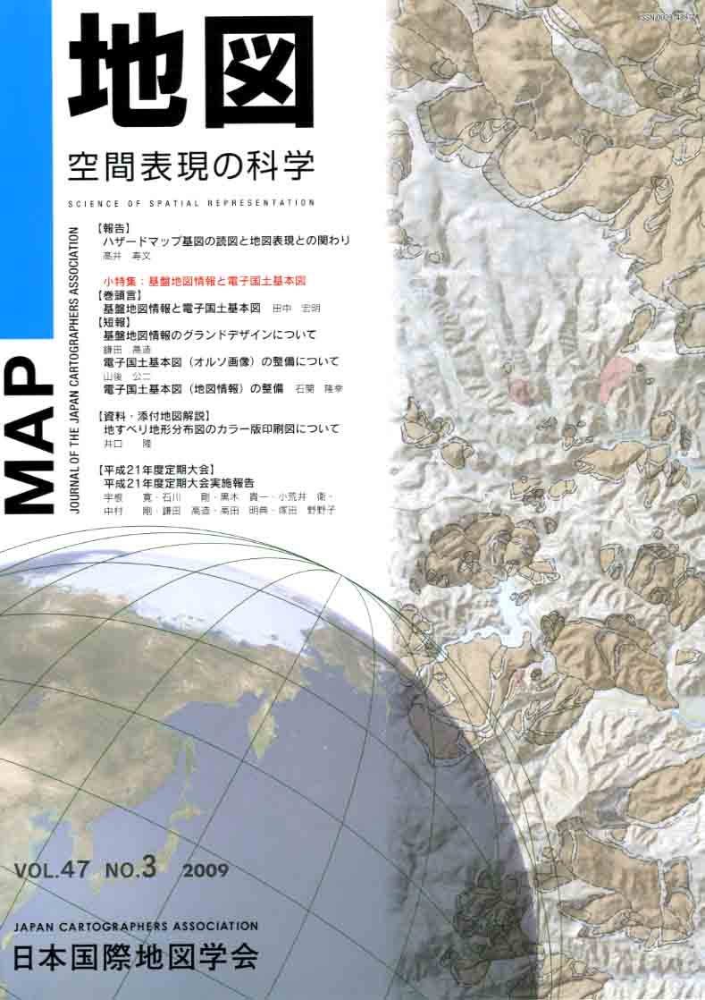
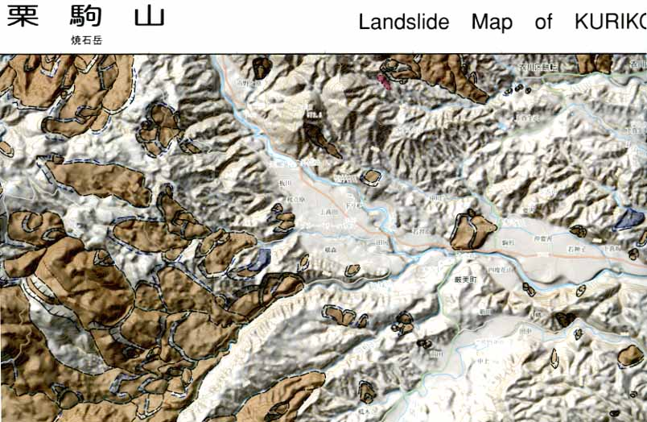

| 最 新 号 | バックナンバー | 添付地図目録 | 投 稿 規 程 |
Vol.47 No.3 （通巻１８７号） ２００９年
| 【報告】 | ハザードマップ基図の読図と地図表現との関わり | 髙井寿文 |
| キーワード：ハザードマップ、基図、読図、地図表現 | ||
| 小特集 「基盤地図情報と電子国土基本図」 | ||
| 【巻頭言】 | 基盤地図情報と電子国土基本図 | 田中宏明 |
| 【短報】 | 基盤地図情報のグランドデザインについて | 鎌田高造 |
| キーワード：地理空間情報活用推進基本法、基盤地図情報、位置の唯一性、位置精度の確保、法定図書 | ||
| 電子国土基本図（オルソ画像）の整備について | 山後公二 | |
| キーワード：電子国土基本図、オルソ画像、空中写真撮影作業のデジタル化 | ||
| 電子国土基本図（地図情報）の整備 | 石関隆幸 | |
| キーワード：基本図体系の見直し、電子国土基本図（地図情報）、取得基準・表示基準、地図情報の更新 | ||
| 【資料・添付地図解説】 | 地すべり地形分布図のカラー版印刷図について | 井口 隆 |
| キーワード：地すべり地形分布図、カラー試作図 | ||
| 【平成21年度定期大会】 | 平成21年度定期大会実施報告 | 宇根 寛・石川 剛・黒木貴一・小荒井衛・中村 剛・鎌田高造・高田明典・塚田野野子 |
| 【ニュース】 | ICA（国際地図学協会）50周年記念式典参加報告 | 森田 喬 |
| 【特別会員のページ】 | 株式会社帝国書院 | |
| 株式会社ダイアカラー | ||
| 【学会記事】 | ||
| 【添付地図】 | 地すべり地形分布図「栗駒山」カラー版試作図 | |
| 国土地理院刊行地図一覧図（平成21年10月1日現在 一般の部） | ||
|
≪No.47 No.3 表紙≫ |
|
|  |
|
|
|
≪No.47 No.3 添付地図≫ |
| 
本図を許可なく複製・利用することを禁止します。
|